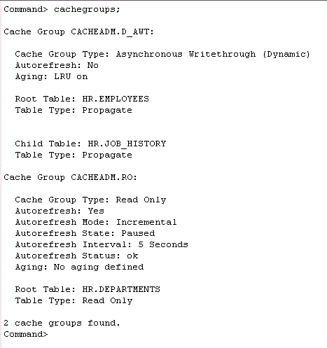

A cache group is a collection of Oracle tables cached inside a TimesTen in-memory database. A cache database may contain one or more cache groups.
A cache group can be read-only or updatable. With a read-only cache group, updates in the Oracle database are automatically refreshed to the corresponding cache tables in the TimesTen database. With an updatable cache group, updates on cache tables are automatically propagated to the corresponding tables in the Oracle database.
The data in a cache group can be pre-loaded, or loaded on demand. Cache groups can be preloaded when the set of data to cache can be predetermined. A dynamic cache group is a cache group where the cache data is loaded on demand. This is appropriate when the set of data to cache cannot be predetermined.
The examples below show how you can create an updatable local cache group, and a read-only local cache group.
1. Start the Cache agent2. Define the Cache Groups
Log in to ttIsql as the user cacheadm, passing in the TimesTen and Oracle user passwords for cacheadm.
ttIsql
connect "dsn=cachedb1_1211;uid=cacheadm;pwd=cacheadm;oraclepwd=cacheadm";
The cache agent process is responsible for managing the communication between cache databases, as well as controlling the data flow from an Oracle database to a TimesTen cache database.
Call the built-in procedure ttCacheStart to start the cache agent for the current database.
call ttcachestart;
Enter the following CREATE CACHE GROUP statements, to create a dynamic updatable cache group named d_awt to cache the HR.EMPLOYEES and HR.JOB_HISTORY tables. Alternatively, run the script create_local_dyn_awt.sql located in the <QUICKSTART_HOME>/sample_scripts/cache directory.
Note: <QUICKSTART_HOME> is the location where you unzip the QuickStart Guide tar file.Either run the following script:
@<QUICKSTART_HOME>/sample_scripts/cache/create_local_dyn_awt.sql;
or run the following code:
create dynamic asynchronous writethrough cache group d_awt from
hr.employees ( employee_id number (6) not null,
first_name varchar2(20),
last_name varchar2(25) not null,
email varchar2(25) not null,
phone_number varchar2(20),
hire_date date not null,
job_id varchar2(10) not null,
salary number (8,2),
commission_pct number (2,2),
manager_id number (6),
department_id number(4),
primary key (employee_id)),
hr.job_history (employee_id number(6) not null,
start_date date not null,
end_date date not null,
job_id varchar2(10) not null,
department_id number(4),
primary key (employee_id,start_date),
foreign key (employee_id)
references hr.employees (employee_id));
Enter the following CREATE CACHE GROUP statement, or run the script create_local_ro.sql located in the <QUICKSTART_HOME>/sample_scripts/cache directory to create a read-only local cache group named ro to cache the HR.DEPARTMENTS table.
Either run the following script:
@<QUICKSTART_HOME>/sample_scripts/cache/create_local_ro.sql;
or run the following code:
create readonly cache group ro
autorefresh
interval 5 seconds
mode incremental
from
hr.departments (department_id number(4) not null primary key,
department_name varchar2(30) not null,
manager_id number(6),
location_id number(4));
The ttIsql command cachegroups can be used to verify the definitions of cache groups in the database.
cachegroups;

3. Start the Replication agent
(required only if there are asynchronous writethrough (AWT) cache groups)
The replication agent process is primarily responsible for the replicating data between TimesTen databases, but it is also responsible for propagating the updates from a TimesTen cache database to an Oracle database. This step is needed only if you have asynchronous writethrough (AWT) cache groups.
Call the built-in procedure ttRepStart to start the replication agent for the current database.
call ttrepstart;
Once the cache groups have been created and the required processes have been started,
you can start loading data into the cache tables. For more information on how to load data into cache groups,
refer to the section Loading Data into Cache Groups
| 1 | 2 | Next > |